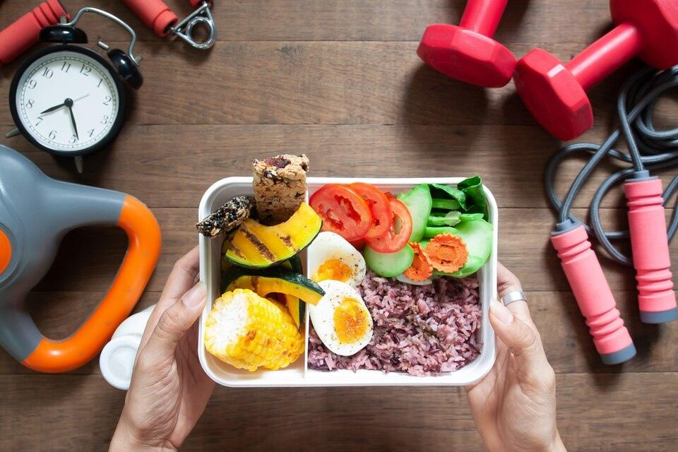

🩺 Evidence-Based Clinical Portal
•
100% Manually Verified Credentials
Recover faster with precision nutrition & trusted specialists.
Find verified clinical dietitians, specialized recovery therapists, and evidence-backed medical nutrition protocols tailored to your exact metabolic, digestive, or post-surgical milestone.

✓ Monash, CDR & CNS Verified
Dr. Elena Vance
GI Microbiome Specialist
98.4%
Patient Trust Rate
2,400+
Verified Providers
120+
Recovery Guides